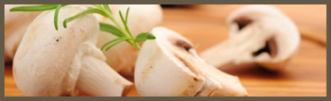
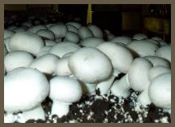
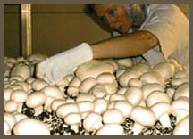

Who are we?
Elf Mushrooms is situated at 61 Wallace Road, Vineyard in the North West area of Sydney. We produce approx. 3 million Kilograms of mushrooms annually and employ 130 permanent employees.This makes us the second largest mushroom producer in NSW. Elf Mushrooms has been a family owned company since its beginnings dating back to 1960.Currently two generations are involved in the mushroom production with Rob Tolson producing mushroom substrate from stable bedding from the race horse industry, poultry manure, wheat straw and cotton seed products that are blended together and composted to make a substrate for mushrooms.
The second generation of boys Robert, Kevin and David Tolson all own their own mushroom farms situated in the Hawkesbury/Nepean Valley.

 
From these three mushroom growing facilities, we produce six and three quarter million kilograms annually and produce 450 m3 (per week) of spent mushroom compost for home gardeners, horticulture, agriculture and viticulture.
We are proud that we recycle others waste products to produce a sustainable food crop that when exhausted for mushroom production is a good food and water saving product for other plants.